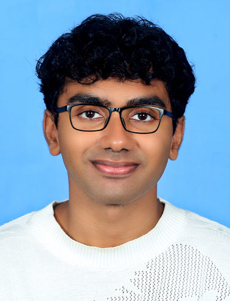

Fariz Sameer
LinkedIn
GitHub

Summary
A passionate and dedicated Web developer with a strong foundation in HTML, CSS, and JavaScript. Experienced in creating responsive and user-friendly websites. Eager to contribute to a dynamic team and continuously learn new technologies.
Education
- B-Tech in Computer Science (National Institute of Technology Andhra Pradesh - 2022-2026)
- Higher Secondary Education (International Indian School Dammam - 2019-2021)
Work Experience
-
Web Developer Intern
Created responsive web pages and implemented interactive features using HTML, CSS, and JavaScript.
-
Freelance Web Developer
Designed and developed websites for small businesses, ensuring a user-friendly experience and responsive design.
Skills
- Proficient in HTML, CSS, and JavaScript
- Experience with responsive web design
- Familiarity with version control systems (Git)
- Strong problem-solving skills
Awards
- Best Web Development Project - University of Technology (2023)